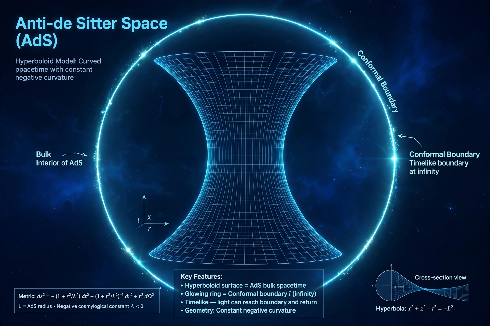

From Wikipedia, the free encyclopedia

This page serves as a contents overview for Wikipedia's coverage of anti-de Sitter (AdS) space and the AdS/CFT correspondence. Anti-de Sitter space is a maximally symmetric Lorentzian manifold with constant negative scalar curvature, named after Willem de Sitter. It became central to theoretical physics after Juan Maldacena's 1997 proposal that string theory on AdS space is equivalent to a conformal field theory living on its boundary.